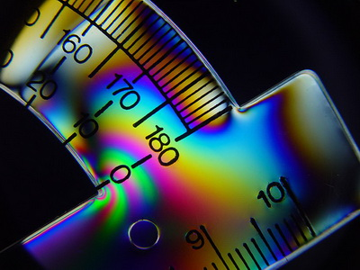
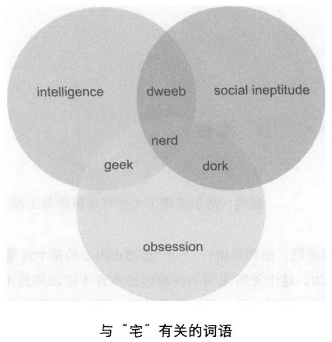

冷浪漫
1 色
1.1 植物的彩色智慧
叶绿素 a 捕捉红光，叶绿素 b 捕捉蓝紫光，胡萝卜素捕捉蓝光，不被捕捉的绿光被叶片反射或透射。
为了使叶片快速发育成熟，植物嫩叶中会聚集大量糖类、矿物质，为了避免被食草动物啃食，有些植物嫩叶中含有氰化物，同时用红色花青素作为警示。
秋天落叶之前，植物需要将储存在叶片中的营养转移到茎、根中。随着气温下降，阳光对叶绿素的破坏作用会增强，这时花青素可以为叶绿素抵挡住一部分阳光。
为避免其他种类植物的花粉落到柱头，造成花粉、胚珠的浪费，植物除了错开花时，还会只吸引各自特定的传粉者。不同传粉者对颜色的喜好不同，蜂类喜欢黄、蓝色，鸟类喜欢红色，蛾类喜欢白色。
绿色的果实表示种子还未发育成熟，可以躲在绿叶当中，同时果皮中含有酸涩的有机酸、醇，避免动物吞食。当种子发育成熟，果实通过花青素鲜艳的颜色，以及果皮中芳香的酯类、糖，引诱动物来帮助传播种子。
辣椒素是对种子的一种保护，因为辣椒种子经过小型哺乳动物的消化后难以发芽，而鸟类的消化系统不会对种子造成破坏，同时鸟类的味觉中没有辣。
1.2 神秘中国色
非天然颜料在古代并不常见，尤其是蓝紫色更为罕见，目前已知工业社会之前只有三种人造蓝紫色：埃及蓝、中国蓝（紫）、玛雅蓝，前两种都是二价碱土金属 + 铜硅酸盐结构。中国蓝（紫）在秦兵马俑、汉朝佣器上被大量使用。
玉在道教文化中有重要地位，「奉为圭皋」中的「圭皋」就是玉石。汉朝「罢黜百家，独尊儒术」的做法使道教受到打击，儒教重「道体」，轻「器用」，很可能中国蓝（紫）的配方因此失传。
1.3 没有颜色的奇妙世界
人类视网膜上有两种感光细胞：视杆细胞和视锥细胞，这两种细胞中都含有感光蛋白。一旦光线打到视网膜上，感光蛋白就会迅速做出反应，产生电流信号，把信息传递到大脑。
视杆细胞中的感光蛋白只对一种波长的光线最为敏感；而视锥细胞则分为 3 类，其中含有的感光蛋白分别对蓝绿色、黄色和橙色光线最为敏感，大脑通过分析 3 种视锥细胞对特定颜色的不同反应来分辨颜色。视锥细胞一般出现在视网膜的中心聚焦区，而视杆细胞位于视网膜边缘。
视杆细胞对光线极其敏感，只需要 1 个光子就能产生显著的电流信号（对于视锥细胞而言，一般需要 100 个光子才能产生显著的电流信号）。在夜里，全色盲患者的视力比普通人更好，能看得更加清楚。这是因为我们在光线幽暗的情况下更多地依赖对光线极其敏感的视杆细胞。全色盲患者视网膜里的视杆细胞在独撑大局多年之后，就像盲人的听觉系统一样，已经变得比普通人的更为高效了。
为什么这个小岛上的全色盲发病率如此之高呢？这要归咎于两百多年前的一场灾难。1775 年，飓风袭击了这个小岛，岛上的上千名岛民有 90% 遇难。飓风毁坏了植被，活下来的居民也陷入了饥荒中。最后，整个小岛只有 20 个人存活了下来。而这 20 个人中，正巧有一个人携带着全色盲基因，而他，正是这个小岛的国王。由于群体数量急剧减少，导致后代某些基因的比例大幅度变化，这就是群体遗传学中著名的「瓶颈效应」。
1.4 彩色花纹背后的秘密
应力是物体对外力作用的反应，表现形变产生时物体内部每一点与相邻点之间通过力进行相互作用的强度。对于材料科学来说，物体的应力分布是一个重要参数。
应力问题固然可以利用复杂的力学方程、材料的形状、材质参数来计算，但有比数学公式更给力的解决办法，光弹性法就是一个很好的例子。
光弹性效应也称应力双折射效应，当外力作用于某些材料时，材料内部会受到一定的应力影响，产生形变，分子间的距离发生了细微变化，这种变化将影响该材料的折射率。还有一种情况，应力在改变物体折射率大小的同时，会将各向同性的材料变成瞬时的双折射材料（介质不同方向上的性质不同，当光经过介质时会产生两个方向的折射光）。
发生双折射时，通过偏振片，两条折射光就会形成干涉条纹。应力变化越大的地方，折射率变化也越大，形成的干涉条纹也越密。通过观测或测量干涉条纹的位置和宽度，就可以推导出结构模型在压力作用下的应力状态。

1.5 你看，你看，色彩的表情
总的来说，长波颜色（比如红色、黄色）可以振奋精神，而短波颜色（比如绿色、蓝色）可以使人安静。
1.6 音有相，色无形
用小提琴拉出一个音符时，由于弦的振动叠加，因而会同时产生若干个高于预期频率的波，响度最大的就是我们平常唱的音符，也是振动中的基音，基音一般还伴有多个泛音，频率是基音的数倍，泛音的响度会迅速衰减。
不同乐器的发音原理不同，共鸣腔结构不同，因而形成了不同的泛音结构，乐音的频谱图就是各种乐器的身份证。
不单每种乐器的泛音频谱不同，甚至于每件乐器都有自己的泛音特征频谱，甚至一件乐器在不同年龄段，频谱也有变化，像刚买来的新琴总有些泛音出不来，用过一段时间后，音色开始渐渐变得柔和。
2 爱
2.1 朱丽叶的生理周期
第二性征明显与否，会反映出一个人的生理状况，如是不是有更好的免疫能力和其他环境适应性。这是物种为了保证有效求偶进化出来的，与此对应，对方的大脑神经中也具备一套识别机制。
对于排卵期的女人来说，此时的激素水平非常适合她更好地运用这套机制，而求偶欲最低的月经期，她才懒得去费那个心思呢。
2.2 花花事
目前市面上的玫瑰几乎全都是被称为「China Rose」的月季的后代。而那些茎杆上密刺丛生、只有 5 个单薄花瓣的、真正的玫瑰则更适合出现在玫瑰糖和玫瑰果酱中。
2.3 基因决定我爱你
1976 年，日本的科学家首次发现，雄老鼠更愿意与「主要组织相容性复合体」（major histocompatibility complex，MHC）不同的雌老鼠交配。主要组织相容性复合体是一组编码组织相容性抗原的基因群，在免疫系统中有重要作用，控制着免疫排斥反应。
存在于大部分脊椎动物基因组中的一个基因家族，与免疫系统密切相关，其中人类的 MHC 糖蛋白，又称为人类白血球抗原（human leukocyte antigen，HLA）。
其中部分基因编码细胞表面抗原，成为每个人的细胞不可混淆的「特征」，是免疫系统区分本身和异体物质的基础。
HLA 复合体位于 6 号染色体短臂上的 21.31 区（6p21.31），由 360 万个碱基对组成，是目前已知的人类染色体中基因密度最高，也是多态性最为丰富的区域，因此被称为「人类体内的化学指纹」。
2.4 爱情三问
我们爱的确实不是某个特定的人，而是他给我们的感觉t让我们神魂颠倒的不是那张英俊或美丽的面孔，也不是体贴而温柔的眼神，而是大脑由此制造的你的体验。
一些科学家甚至把爱情看作一种「瘾」，因为一旦大脑将你的身体反应评价为爱，就会引发脑内产生更多的内啡呔（一种能使我们极其愉悦的化学物质），促使大脑中的奖赏回路开始兴奋。我们想不停地追求愉悦，就得不停地追逐能产生这种感觉的刺激。
……这种确有其事的感觉只是一种谬误，是脑中某些事件的可利用性带来的错误判断。
「好汉好妻」的组合事实上可能比「赖汉好妻」的组合概率要高得多，但因为后者更容易被我们关注，导致我们认为它出现的概率更高，于是产生了确定性感觉。
人类在进化的过程中已经发展出一套相对稳定的生理变化模式。随着身心的发育，人体内的激素平衡也保持着动态变化，让不同年龄阶段的人都有特定的最适合去做的事情。
青春期与青年期的性激素水平最高，整个身心都准备好繁衍后代。随着年龄渐渐增大，激素的分泌与平衡会使这种男女之间的激情慢慢消退，让他们能更安心地抚养后代。
……习得性恐惧。如果一个人年轻的时候经历过一场刻骨铭心但最终带来极大伤害的爱情，记忆中的痛苦体验也许会使他本能地拒绝再次接近爱情。
2.5 我要我们在一起
稳定婚姻问题
给定若干个男生和同样多的女生，他们每个人都对所有的异性有一个心理偏好次序。是否存在一种男女配对组合能够构成一种稳定的组合关系？这里「稳定的组合」意思是，不存在两个非伴侣的异性对彼此的评价比对各自伴侣的评价还要高。
Hall 定理
给定 n 个有限集合（其间可以有交集），如果其中任意 m 个集合的并集的元素个数都不小于 m，那么一定存在 n 个不同的元素，使它们正好依次存在于这 n 个集合之中。
比如，把 52 张扑克牌任意分成 13 堆，每堆 4 张牌，一定存在一种方式，能够从每堆牌中抽出一张来一共 13 张恰好凑成一条不一定同花的顺子。
稳定婚姻问题一种解法
首先，所有当前还是单身男生去向他们最心仪的（还没有表白过的）女生表白，无论其是否已经有了男朋友；然后，所有收到表白的女生们都要从中选择自己最喜欢的人为男朋友；以上过程称为「一轮」。
之后的每一轮都按照类似的方式进行。如果女生已有男朋友，而表白者中有自己更喜欢的，则更换之。这个过程一定会终止，一旦终止，每个人都会找到一个伴侣，且最终得到的一定是如前所述的「稳定组合」。
上述「算法」只是给出了所有可能的稳定组合中的一种，且得到的稳定组合和所有其他可能的稳定组合相比，是对男生最优而对女生最劣的，也就是说，对每个男生来说，按照这种方式最后找到的伴侣，是在所有的稳定组合中可能找到的伴侣中自己评价最高的。
思考上面描述的规则，就会看到男生有一样优势至关重要的优势：他们是主动方。
2.6 完美爱人进化论
在自然选择之外，还有另外一种不可或缺的进化方式——性选择。
同性竞争，是指同一性别成员之间的竞争，目的就是争夺与异性交配的机会。
异性选择，就是拥有更多异性偏爱特性的个体更可能繁殖成功。
亲代投资理论
雌性动物往往在生命体的幼年时期付出更多的亲代投资，拥有宝贵的繁殖资源，因此那些在择偶时更为挑剔的雌性的后代更可能存活下来。
1．为后代投资更多的一方会在择偶时更挑剔；2．投资更少的一方在争夺异性的过程中更具竞争性。
一些研究则表示，对称的脸孔比不对称的脸孔看上去更美、更有吸引力，而脸孔对称实际上是健康的标志。
3 和
3.1 卷首语
为什么土豆牛肉的搭配常受赞誉？这是因为土豆中含有较多谷氨酸盐，而牛肉中不仅有谷氨酸盐，还有很多肌苷酸盐和鸟苷酸盐，这 3 种成分便是食物鲜味的来源。
一首曲子听上去好不好听主要取决于谱曲中各个音符产生的频率是否谐性相关。
当两个音间隔 1、2、6、11 个半音时，会给人不和谐的感觉，而当两个音相差 3、4、5、7、9、12 个半音（相当于钢琴键盘上任意一个白键与相邻的黑键之间的关系）时，形成的和声会令人舒服。
冷媒介
包含了需要仔细辨认、悉心揣摩方能预热的符号和隐喻。
3.2 来自金星的和谐
雌性动物的凑群性，一种可能是由雌性动物组成一个群落是哺育后代的最佳选择。
测试发现，在压力之下男性更愿意和陌生女性结伴抵抗压力，而女性则倾向于和陌生女性结伴。女性和陌生男性在一起的时候，反而会更紧张、压力更大。
3.3 老板，来份淘气味的
我们能够尝到的基本味道只有甜、苦、酸、咸、鲜5种，我们能感知各种味道主要都是嗅觉的功劳。
此外，还有三叉神经感受到的刺激，比如，辣椒产生的「痛」，薄荷产生的「凉」，青柿子产生的「涩」，等等。
人体内存在着一个约有 1000 个基因的家族，编码着 1000 个左右的受体，每个受体能够识别一定种类的气味物质。
几种气味产生的神经信号能够结合起来，还会形成一种特定的「模式」，产生新的感觉、回忆，或者心情。
一家公司发现，食物中的气味物质的释放时间和组成，以及食物在口中停留的时间长短，会影响人们进餐时的饱足感。如果找到某些「好」的味道组成，人们可以在吃下同样食物的情况下感觉「更饱」，这样就会降低人的进食量。
3.4 跟我合一曲 Accapella
单独的音调可以作为基音，用一条正弦曲线代表。每个基音都有频率是它数倍的泛音。
对于合唱、吉他曲、钢琴曲、交响乐等音乐形式，更常见的是 3 个或更多个音形成的和弦。
声音的和谐规律是生物在长期进化过程中逐渐获得的。在动物世界里，下降的音调常预示着威望、攻击和支配，而上挑的音调则代表顺从、软弱与屈服。
4 美
4.1 护肤品的大小把戏
氮化硼
由氮原子和硼原子构成的晶体，主要有 3 种结构，其中六方体的晶体结构类似于层状石墨，只不过是白色而非黑色的而已，它具有良好的润滑作用，可用作各种工业用途，如在轴承和滑动零件处减少摩擦。
硅酮
有机硅化合物和硅氧烷相互连接成的一类聚合体，自 20 世纪 80 年代以来就在化妆品行业中受到重视，因其润滑性和生物适应性而被广泛使用。
……声称的细腻光滑之功效在我看来多出自于这两种材料的物理特性。换而言之，你感受到的滑并非本质的肌理的滑，而是皮肤被覆上了一层「膜」所致。
那些价钱比一般保湿乳液昂贵了至少 5 倍以上的精华液充其量就是多放了一点硅酮而已，而它看起来稀拉通透的形态只不过因为少了点增稠剂。
眼霜也同理，它与面霜的成分差异远远不会够得上你需要在其间多支付的不合理差价。
「它们的成本真的太便宜了，也许连价格的1%都不到，我们支付的是广告和包装费用。」
4.2 胶原蛋白美容与院墙上的画
影响皮肤形态的最重要的成分是胶原蛋白，它的组成跟别的蛋白质差别很大。皮肤的衰老与胶原蛋白的「老化」关系密切，皮肤的更新过程就涉及到胶原蛋白的生成。而蛋白质的生成必须有相应的氨基酸做原料。
就算东西 A 是由东西 B 构成的，我们提供了东西 B 也完全不意味着就能得到 A。
胶原蛋白广泛存在于哺乳动物的皮肤、骨头等部位。把它有限水解之后的东西在国外叫「gelatin」，最通常的用途就是做果冻。在中国，人们把水解出来的东西叫做「阿胶」。
现在美容界的圣品加入了「高科技元素」，水解得比 gelatin 充分得多，叫做「胶原蛋白水解物」。
的确没有科学证据证明胶原蛋白不能美容，但目前没有科学的证据证明它能够美容。我们只能说商人和媒体说「能美容」没有可靠依据。
如果有人认为「不能证明它无效」就意味着它「有效」，或者愿意为了那种「可能有效性」掏钱，这是一种社会财富再分配的良好形式。
4.3 卸妆之后的螺旋藻
从生化组成的角度来说，螺旋藻确实有它的特别之处。
它的蛋白质含量很高，最高能占到干重的 70%，组成蛋白质的氨基酸构成也比较接近人体需要。在它所含的脂肪中，多不饱和脂肪酸的比例很高。它的维生素含量也很高，尤其是 B族维生素与维生素 C、D、E 以及类胡萝卜素。它的矿物质含量也比较丰富，比如钾、钙、铬、钴、铁、锰、硒、锌。此外，它还含有比较多的色素。
每天吃 5 克螺旋藻干粉已经花费不菲，所含的蛋白质不过 3 克左右，跟 100 毫升牛奶相当，还不如 50 克豆腐来得多，而人体一天需要几十克蛋白质。
用购买相应的螺旋藻的钱，我们完全可以购买更多的常规饮食来解决这些「营养不良」问题！
如果生产条件合格，没有重金属污染，螺旋藻是一种很安全的野菜。跟萝卜白菜相比，它的营养成分还比较丰富。如果它的价格跟普通蔬菜相差不大，那么它也可以像海带一样成为健康食谱的一部分。
4.4 文身，危险时尚美
1891 年 12 月，英国人塞缪尔·奥赖利（ Samuel O'Reilly）从爱迪生发明的一款雕刻机中突获灵感，制造出文身机。历经百余年发展，现代文身机的基本构件几无变化：消毒针头、管道系统、电磁振荡器与脚踏板。
针头以每分钟跳动 50 - 3000 次的频率在皮肤上刺孔，深度约 1 毫米，每针注入一小滴墨水，直达皮肤真皮层的浅层。
目前，尚无因文身传染艾滋病的记载。但未经消毒的文身过程，可能导致梅毒、乙（丙）型肝炎和其他细菌感染。
出于人体的自我保护机制，颜料颗粒将被纤维组织包裹起来，并成为皮肤的一部分。
当你悔恨最初的文身决定时，只有外科医生能帮你：通过手术切除文身的皮肤，或对皮肤进行深层磨削，若文身面积过大，还必须进行植皮。
另一种方法是激光照射治疗。美国国立毒理学研究中心发现，激光分解颜料时会激发化学反应，产生致癌物和可诱导突变的降解物，随后被机体吸收。
5 宅
5.1 卷首语

5.2 宅人的食谱不等式
控制热量摄入是控制体重的根本，而减少食物量是控制热量最直接、有效的手段。
但是，人体需要的基本营养成分却不能因此减少。无论是必需氨基酸、必需脂肪酸等「宏观营养成分」，还是维生素、矿物质等微量元素，对于维持正常生理功能、保持正常免疫力都是不可或缺的。
5.3 宅男娶媳妇和时空曲率的关系
四维的常曲率时空分为 3 种：闵可夫斯基时空、德西特时空和反德西特时空。它们都是爱因斯坦引力场方程的真空解，分别对应零曲率、正曲率和负曲率的时空。
「物质告诉时空怎样弯曲，度规描述时空如何弯曲。」
5.4 大宅门里探究竟
所谓自我保护机制，功能类似生理学中的免疫系统，它普遍存在于人的心理活动中，一般当我们对于某一事物的认知与我们的自我概念不同，使自我概念的稳定性受到威胁时，人们便会采取自我保护。
当我们遇到挫折时，会选择放弃以成人方式解决问题，而退到一种让自己觉得困难较少、阻力较弱、较安全的情境中——儿童时期。低头、闭眼、蜷缩身体，让自己回到处于母体子宫中的状态，因为在每个人的潜意识中，这个姿势和状态是最平和、最安全的。
我们让自己虚拟到儿童时对别人的依赖，害怕再承担成人的责任，这就是「退化」的防御手段。
5.5 实验室里的宅生物
大型蚤因为孤雌生殖，成了理想的实验动物，生下来的子子孙孙在遗传上就都是稳定的，实验误差会小很多。
5.6 宅族性幻想分析
不过在无伤大雅的情况下，没事想想 sex 好处之一在于能够增强对不良环境的耐受能力，因为人类的情感和疼痛感都由丘脑掌控，互相有所牵制。
6 酒说
6.1 卷首语
一种假说：人类对酒精的迷恋是「偏爱成熟果实」这一适应行为的副产品。
熟透的水果富含两种化学物质：糖和乙醇，易挥发的乙醇气味便成了灵长目动物觅食的重要线索，以这种最原始的方式，对酒精的欲望在人类基因中刻下了印痕。
在生物工程学者看来，酿酒还是一场生化反应，淀粉先水鹪为葡萄糖，而后携手酵母转化成酒精――一场对糖的欲望的延伸。
6.2 来杯秸秆鸡尾酒
生物工程学家说：「只要是葡萄糖构成的东西，我们都可以把它变成美酒。」
咖啡固然不同，但终究是咖啡树的果实；茶尽管有别，也都是茶树的叶片；而美酒，却是不同植物、不同部位的升华。
古时候，生产小米的作物――粟，是黄河中下游地区的主要农作物，现在的主要作物小麦那会儿还在小亚细亚的河谷里晒着太阳。
这一时期，在狗尾草不甚丰富的长江流域，古人发现并培育了另一种谷物――野生稻。经过不断地筛选，那些籽粒饱满、容易收获的个体被保留了下来，成为栽培水稻的始祖。
……后来，人们发现了高效的淀粉糖化「工具」――小麦籽粒上的曲霉，可以产生纯正高效的淀粉酶。
麦曲在西汉就出现了：将小麦做基底的酒曲的引入，使淀粉更高效地转化成糖，谷物酿酒进入了光明时期。
在酒曲的帮助下，很多淀粉丰富的原料都被放进了酿酒窖池，也就有了后来的高梁酒、玉米洒以及红薯酒……
葡萄，在植物学家眼中，就是携带了酿酒酵母的葡萄糖。葡萄本身携带了生成美酒的这两大要素，再没有比这种葡萄糖含量可以占到干重 20% 以上的果实更合适的酿酒原料了。
不仅是葡萄，苹果、梨等含糖量丰富的水果在成熟后期也会产生乙醇。
甘蔗的老家在亚洲热带的太平洋岛屿上，后来被引种到我国和印度。公元 642 年，才被阿拉伯人带到了地中海地区，又过了 500 年，欧洲的骑士们才在叙利亚尝到了甘蔗。
西亚并不是喜好湿热的甘蔗的理想种植地，当年，从地中海进口到欧洲的甘蔗糖是相当金贵的调味品。后来哥伦布把甘蔗送到了加勒比海地区，甘蔗终于找到了生长的天堂。
……工业化的制糖过程，提炼蔗糖都是靠加热甘蔗汁蒸发水分，最终使蔗糖结晶。用这种方法到最后总有一些含高分子的残液无法继续加热，否则就会炭化。
在早期，这些残余的糖稀或糖蜜只能用作焦糖，后来，新英格兰的殖民者发现，它们可以用以酿酒，朗姆酒于是诞生了。
朗姆酒酿出即卖，没有储存期，因此辛辣刺喉，加上价格低廉，很受生活在艰苦环境中的水手和海盗的青睐。
朗姆酒最初就是个制糖的副产品，直到后来，人们找到了甜菜这种可以在温带种植的「产糖机器」，才将甘蔗从制糖产业链中解放出来。
与淀粉和小分子糖相比，植物中以纤维索形态储存的能量更多，每年收获的玉米和稻谷有 50%～60% 的光合产物都被抛弃在秸秆里。
橡木特有的内在品质是成就葡萄酒的关键一环。
橡木木材疏密适中，在保存酒体香气的同时，又可以允许一部分氧气进入，让桶内的红酒充分发酵。
另一方面，橡木含有大量的酚类、醛类和单宁等次生代谢产物，这些产物不仅丰富了红酒的香味（比如说，糠醛就有杏仁香味），更重要的是单宁可以笼络住红酒中那些不稳定的色素，使得红酒呈现出令人愉悦的颜色。
6.3 动物瘾君子
在自然条件下，酒精往往同糖分丰富的果实联系在一起，那些对酒气更敏感、更偏好的动物可以获得更多的能量，使它们在生存竞争中获得胜利。
酒精被消化道吸收后，除了少部分通过呼吸和泌尿系统排出，大多数要通过肝脏代谢。
酒精在乙醇脱氢酶的作用下变为乙醛，在经过乙醛脱氢酶作用转化为乙酸，乙酸氧化分解或者转变成脂肪。这里面，乙醛是让人面红耳赤，心跳加速，头昏眼花的罪魁祸首。
在亚洲人群中，编码乙醛脱氢酶的 ALDHl 基因发生变异是一种普遍现象，变异的结果是乙醛脱氢酶的活性大大降低，人变得更容易醉酒。但在欧洲人的后裔中，这种变异却很罕见。
6.4 酒酿家庭装
酿酒大概是人类最早的食品加工技术之一。在人类还完全不知道淀粉、葡萄糖、酒精、微生物和酶等名词的时候，世界各地的古人们就可以造出风情万种的酒来。
如果以酒精的产生为中心，那么原料是单糖。
因此，所有能够产生单糖的东西都可以用来造酒。各种果汁中都含有相当量的单糖或者容易转化成单糖的碳水化合物，因此也就可以用来制造各种果酒。
而淀粉――不管是玉米还是大米，就需要先水解成单糖。
不管是酒酿、茅台还是老白干，核心的转化过程是一样的。如果把酒酿滤去固体，得到的液体就是米酒。把米酒蒸馏纯化，就得到高纯度的白酒。
6.5 谁能千杯不醉
亚洲红脸（Asian Flush），学术上称为「酒精性脸红反应」。有近半数亚洲人酒后会红脸，这种现象在其他种族里很少见到。
「早期欧洲人通过把水发酵的方式来净化水，而早期的亚洲人则采用煮沸或泡茶的方式来净化水，这小小的差异让欧洲人在进化过程中，承受了更多的酒精压力，从而使他们酒量大增。」
一直以来，民间都认为酒量是练出来的。2008 年美国的一项研究却表明：酒量的大小、是否嗜酒，绝非后天锻炼养成的，而是由「饮酒基因」决定的。
多吃高脂肪的食物，多喝水或酸奶垫底，能使大部分酒精与食物混合，从而降低单位体积内的酒精浓度。
碳酸饮料和高温会加快酒精的吸收速度。
……常见的解酒方法。结果显示，这些方法对缓解醉酒后的某些症状（如恶心、头痛）有一定作用，但不能解除醉酒状态。
标榜具有解酒功效的药物多半只具有安慰剂的作用。解酒药的成分中，多为氨基酸、维生素和各种活性酶，顶多有缓解头痛、恶心的作用。
最好的药物是时间。身体需要时问来代谢清除掉超量的酒精。
7 新生
7.1 光和热，你好哪一口
最新的生命演化理论，最初的地球生命就是一小根线状的核糖核酸（RNA）分子加上一个脂类分子外壳。
RNA 分子是重要的模板，分散在水环境中的核苷酸分子会依照 RNA 的模样排列，同时相邻的核苷酸分子会粘合在一起，形成一个与模板 RNA 交缠在一起的 RNA 分子。
这个过程在冷水区域完成，随后，它们会被水流推向热水区域，新老 RNA 在高温下分离，脂分子膜也一分为二，新的生命就诞生了。
电力是目前人类社会通用性最强的能源。在细胞中也存在这样的通用能源，那就是三磷酸腺苷（ATP，有时也被称为腺苷三磷酸）。
这些由 1 个腺苷和 3 个磷酸分子顺次拼起来的分子力道之所以巨大，关键是尾巴上的两个磷酸之间就像有一个压紧的弹簧（高能磷酸键），一旦需要就可以断裂，释放出巨大的能量，把蛋白质送到合适的位置，或者把二氧化碳和能量同时「压缩」在葡萄糖里。
在细胞中有「拦河大坝」，不过蓄积的不是水能，而是氢离子（H+）浓度。
就像水会从高处流向低处一样，氢离子也有从溶液的高浓度区域向低浓度区域「流动」的倾向。为了蓄积这些能量，细胞中的一些膜结构（类囊体膜）开始充当水坝，其上有 ATP 合成酶。当氢离子从高浓度一侧流向低浓度一侧时，就推动 ATP 合成酶生产出所有生命的通用能量――ATP。
病毒之所以寄生在其他细胞身上，就是因为它们没有合成 ATP 的系统。
同样是电磁波的太阳光，跟微波炉里的微波在本质上并无区别，它们都携带着能量，可以作用于个头更小的电子。在电磁波的作用下，电子可以在轨道间跃迁，吸收或者放出能量。
更重要的是，电子的这种跳跃行为可以在原子之间传递，当一个原子的电子从高轨道跳下后，能量就传递给了旁边原子的电子，使其跳上高轨道，太阳光的能量就这样在原子间（天线分子）传递下去，直到能量被收集到一个反应中心分子身上。
电子在原子核外的轨道并不是连续的，只有能量合适的电子才能在特定的轨道上运行，要在这些轨道间跃迁也需要一定量的能量，只有具有一定能量（即特定波长）的电磁波才能驱动这个过程。
光合反应中心分子在电子传递游戏中，为了维持正负电荷守恒，它需要从其他地方抢夺电子。最初，在光合细菌中负责提供电子的是硫化氢（H2S）。后来，水分子中的电子成了新兴的蓝藻的掠夺对象。
7.2 生命大爆炸
及至 20 世纪初，全球寒武系地层已经相互连成一片，几乎全都指向一个结论：多细胞生物化石好像是突然出现在寒武系地层里一般。「寒武系地层」似乎是生命活动的一个截然的底界；在更靠下、也就是更古老的地层中，突然就变得一片沉寂。
克劳德倾向于认为，在那时，大气中的氧含量超过了一定程度，足以支持多细胞生物成长。
绝大部分真核生物的生存都需要氧气。对于单细胞生物而言，全部氧气都可以靠细胞膜的渗透获得；但是当多个细胞聚集到一起时，体积增大而相对表面积减小了，这就需要更高浓度的氧气。
在海水中，二价铁离子和氧气是不兼容的，相遇就会氧化形成三价铁进而沉淀，形成所谓「条带状含铁建造」。
这种沉积物曾经遍布太古宇的地层，但在大约 18 亿年前突然不再形成了。由于氧气可以不断生成，而铁却无法补充，这个停止只能有一种解释：海水里的二价铁在此时被耗尽，而氧气也终于可以开始积累了。
直到著名的「布尔吉斯页岩」被重新发现之后，人们才意识到寒武纪是一次多么壮丽的绽放。
寒武纪大爆发的规模可能比克劳德认为的还要大，这场爆发可能是自然界一次狂放的实验，其间创造出了各式各样的「怪物」，它们大部分是不成功的试验品，不久即告灭绝，只有少数存活了下来，成为后来其他物种的祖先。
……甚至认为，倘若把整个生命历史重放一遍，只要其中任何一个实验条件发生轻微的变化，实验结果很可能与现在大相径庭――或许那些怪物在寒武纪会存活下来，而我们则会变成连自己都认不出的形态，智慧生命甚至可能不会诞生。
8 艺术
8.1 卷首语
图灵斑
1952 年，计算机之父艾伦・图灵（Alan Turing）发表了《形态发生的化学基础》一文，在其中建立起了一个化学系统的简单数学模型。在初始条件下，该系统是均匀的，但它会由于其中某些化学物质的扩散而变得不均匀。
图灵称，自然已经给出了关于这个论断的最好例证：对称的椭圆形卵细胞不就能长成不规则的动物躯体吗？这篇论文提出了由于这种均匀态失稳，该系统会自动组织出一些有序变化的定态图纹。后世将这一过程称为图灵失稳，而图纹则被命名为图灵斑。
……次氯酸盐一碘化物一丙二酸体系。这个简单而富于变幻的三次元体系被人用来解释世界上一切动物身体上出现的皮毛图案：老虎、蛇、斑马……
「现代科学在对万事万物的统一认识方面取得的进展微乎其微。我们不知道的东西不是越来越少了，而是恰恰相反，因此我们的大多数基础科学被神秘所弥盖。麻烦不在于我们不知道所有的答案，而在于我们甚至不知道问题是什么。」
8.2 发达数字时代的抒情诗人
如果一个人放弃关于艺术创作的种种玄学般的神秘信仰，而认定一切艺术作品都只不过是某种抽象的形式组合，那么用逻辑和数学来研究美的奥秘就是一种顺理成章的尝试。
……这是不是意味着，所谓的艺术个性其实不过是一种程序性的算法模式而已？
……它恰恰说明，无穷丰富的美学选择和艺术个性可以通过简单的技术手段实现和遍历。如果事实真的如此，那么考虑到电脑的海量计算能力，它的艺术「创造力」将是人类无可匹敌的。
8.3 摄人魂魄的雕刻
HIV 病毒离开体液环境就不能存活，因而只能通过血液、性或者母婴交流 3 种途径传播。
跟病毒家族的其他成员相比，它的传播能力不算强。乙肝病毒能在空气中存活好几天，冠状病毒只要附着在潮湿颗粒物上就能存活一天以上，就连流感病毒，都能在空气中存活两小时。
8.4 雪花史
六边形、三角形和正方形是仅有的能紧密排布成一个平面而不留白的形状。